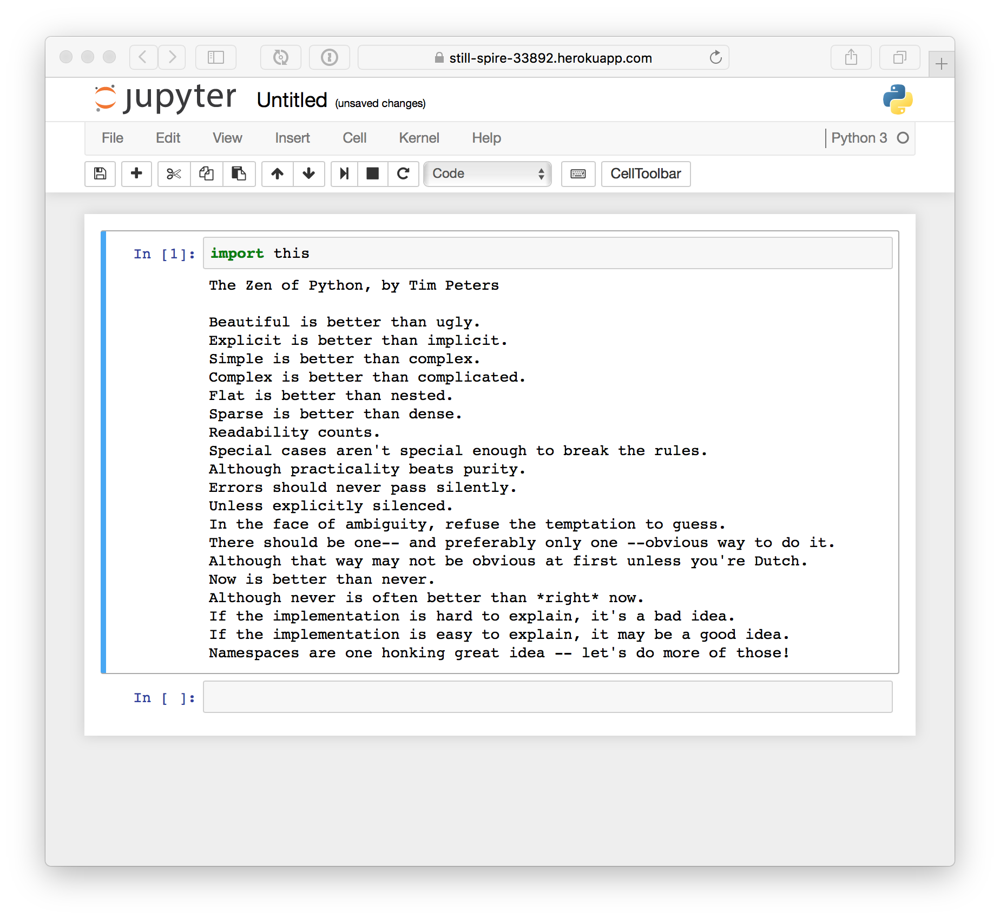

Heroku Deployments
without Git
DjangoCon Europe 2016 🎷
Markus Zapke-Gründemann
Your usual Heroku
Deployment Command
$ git push heroku
But what if
you want to deploy
a Python package?
Manually build
your own Heroku slug?
Sounds reasonable, but is a lot of work. 😕
Enter heroku-slugify
Uses Heroku's sources and builds API endpoints. 🏭
Creates and uploads a tarball with your files. 📦
The tarball is used to configure the slug. 🔩
Heroku's servers will take care of building the slug. ✨
Example:
Deploying Jupyter Notebook
Install heroku-slugify
$ npm install heroku-slugify --global
Create a directory
for the configuration files
$ mkdir heroku
Create a requirements file
$ cat heroku/requirements.txt
jupyter==1.0.0
Set the Python version
$ cat heroku/runtime.txt
python-3.5.1
Configure the web server
$ cat heroku/Procfile
web: jupyter notebook --no-browser --ip=* --port=$PORT /tmp
The final configuration
heroku/
├── Procfile
├── requirements.txt
└── runtime.txt
Deploy!
$ heroku-slugify --app YOUR_HEROKU_APP_ID_HERE --version 1.0
That's it! 😄
Easy! What else? 💭
Workshop 💼
Deploying Django Projects as Python Packages
Sunday 14:30 - 16:30
Resources 📌
Building and Releasing Using the Platform API

This work is licensed under a Creative Commons Attribution 4.0 International License.